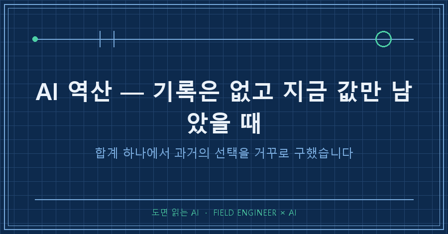
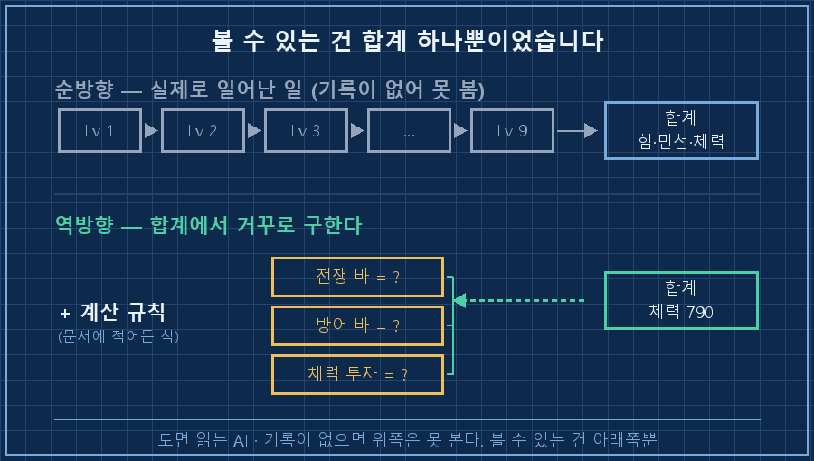
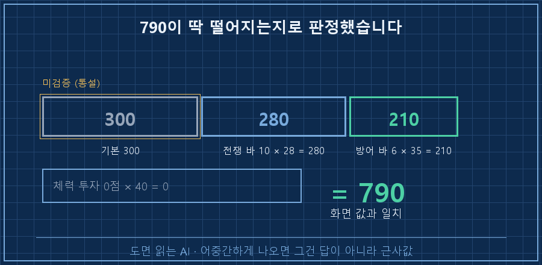
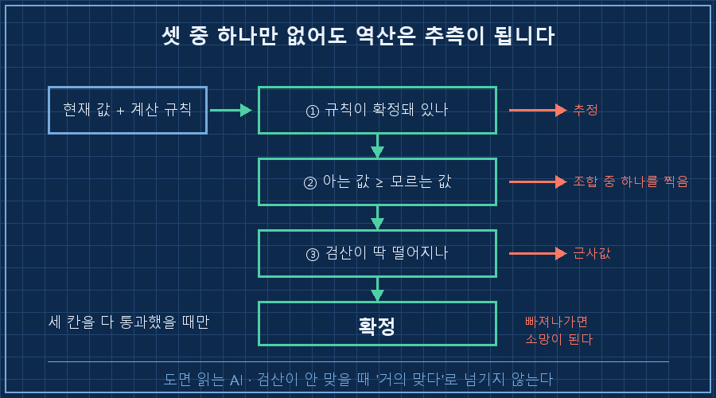

기록을 안 남긴 과거를 알아내야 할 일이 생겼습니다.
화면에 남은 건 지금 값 하나뿐이었고, 거기까지 어떻게 왔는지는 아무 데도 안 적혀 있었어요.
먼저 답부터 적을게요.
AI 역산이면 됩니다. 기록이 없어도 지금 값과 그 값이 만들어지는 계산 규칙만 있으면, 과거의 선택을 거꾸로 구할 수 있어요. 조건이 하나 붙습니다. 값 하나만 가지고는 안 되고, 서로 다른 값 두세 개가 같은 답을 가리켜야 그때 확정이에요.
저는 만든 지 오래된 기계를 넘겨받는 일을 십오 년쯤 해왔어요.
인수인계 서류가 멀쩡한 경우는 별로 없습니다. 그래서 지금 돌아가는 상태를 보고 "이 사람이 그때 뭘 만졌겠구나"를 되짚는 게 반쯤 습관이 됐어요. 이번에 그 습관을 주말 취미에다 써봤습니다.
1. 공략은 만들어놨는데, 제가 어디까지 왔는지를 몰랐어요
지난주에 AI랑 게임 공략 문서를 하나 만들었어요. 레벨 8 시점 기준으로 만렙까지 어디에 몇 점을 넣을지 확정해둔 문서였습니다.
그리고 이번 주에 레벨 9가 됐어요.
여기서 막혔습니다.
문서는 "앞으로 이렇게 찍어라"인데, 저는 지금까지 뭘 찍었는지를 몰랐거든요.
화면에는 힘·민첩·체력의 최종 합계만 뜹니다. 어느 레벨에 어디로 몇 점이 갔는지는 어디에도 안 남아요.
그냥 넘어갈 수도 있었는데, 이 게임에는 겁나는 조항이 하나 있어요. 공략 문서에 제가 이렇게 적어뒀더라고요.
| 이미 바에 목표보다 많이 넣음 | 회수 불가. 그대로 두고 다음 관문으로 점프 |스킬은 골드를 내면 환급이 되는데, 마스터리 바하고 스탯 포인트는 한 번 들어가면 못 뺍니다.
그러니까 잘못 가고 있으면 지금 알아야지, 스무 레벨 더 가서 알면 캐릭터를 버리는 거예요.
처음엔 기억으로 세보려고 했습니다.
그런데 며칠에 걸쳐 올린 레벨을 한 점씩 기억할 리가 없죠.. 세볼수록 답이 달라져서 그냥 접었어요.

2. 그래서 방향을 뒤집었습니다
기억을 되짚는 걸 포기하고, 화면 숫자에서 거꾸로 올라가 보기로 했어요.
역산이란 결과 값과 변환 규칙을 알고 있을 때 입력 값을 거꾸로 구하는 걸 말합니다. AI 역산은 그 풀이를 AI한테 시키는 것뿐이고요.
재료는 두 개면 됩니다. 지금 눈에 보이는 값, 그리고 그 값이 어떻게 만들어지는지에 대한 규칙.
다행히 규칙은 지난주에 이미 문서로 적어뒀어요. 웹에서 열두 번 교차검증해서 확정한 계산식이었습니다.
힘 = 50 + 4×(힘 투자점) + 2×(전쟁 바) + 1×(방어 바)
민첩 = 50 + 2×(전쟁 바) + 2×(방어 바)
체력 = 300 + 40×(체력 투자점) + 28×(전쟁 바) + 35×(방어 바)여기서 제가 모르는 건 네 개예요. 전쟁 바, 방어 바, 힘 투자점, 체력 투자점.
그런데 화면에서 읽을 수 있는 값은 세 개(힘·민첩·체력)뿐입니다.
이게 핵심이었어요. 모르는 값이 아는 값보다 많으면 답이 하나로 안 좁혀집니다.
체력 790만 놓고 보면 이걸 만드는 조합은 수십 가지예요. 방어 바를 많이 올렸을 수도 있고, 체력에 직접 투자했을 수도 있고요.
그래서 조건을 하나 더 넣었습니다. 게임 안에서 마스터리 바 숫자는 직접 눈으로 셀 수 있거든요. 그 값을 먼저 확정해놓고 나머지를 풀게 했어요.
AI한테 준 지시는 이 순서였습니다. 눈으로 확인 가능한 값부터 고정하고, 남은 미지수를 세 식에 동시에 걸어라.
나온 답이 이랬어요.
전쟁 바 10, 방어 바 6, 힘에 13점, 체력에 0점.
3. 검산이 되니까 그제야 믿었습니다
답이 나왔다고 바로 쓰면 안 되죠. 숫자가 나왔다는 것과 그 숫자가 맞다는 건 다른 얘기니까요.
그래서 나온 답을 다시 식에 넣어봤습니다.
체력 = 300 + 40×0 + 28×10 + 35×6
= 300 + 0 + 280 + 210
= 790 ← 화면 값과 일치여기가 이 방법의 전부입니다.
역산 결과는 딱 떨어지는지로 판정해요. 788이나 793처럼 어중간하게 나왔으면 그건 답이 아니라 근사값이고, 근사값은 버려야 합니다.
그다음에 공략 문서의 목표치 표와 대조했어요.
| 레벨 | 목표 힘 | 목표 민첩 | 목표 체력 | 현재 |
|---:|---:|---:|---:|---|
| 8 | 119 | 72 | 695 | 통과 (체력 790) |
| 10 | 130 | 78 | 880 | 이대로면 90 부족 |
| 15 | 168 | 90 | 1,170 | — |
레벨 8 목표선은 넘겼습니다. 여기까지는 잘 온 거예요.
문제는 레벨 10이었어요. 목표 체력이 880인데 지금 790이라 90이 모자랍니다. 체력 투자 1점이 40을 주니까 다음 레벨에서 체력에 2점을 넣으면 870이 되고, 마스터리 바가 주는 몫까지 더하면 선에 닿아요.
결론은 한 줄이었습니다. 레벨 10에서 체력 2점. 이 한 줄을 얻자고 계산식을 다시 꺼내 붙든 거예요.
여기서 솔직하게 하나 밝혀야 할 게 있어요.
이 역산은 가정 하나에 통째로 얹혀 있습니다. 저 식의 맨 앞 숫자 300, 그러니까 레벨 1의 기본 체력이요. 그건 커뮤니티에서 다들 그렇게 말하는 값이지 제가 원문으로 확인한 값이 아니에요. 그래서 문서에 미검증이라고 적어두고 이런 주석을 달아뒀습니다.
게임 화면과 300 내외 차이가 나면 그 차이만큼 평행이동해서 보면 된다만약 지난주에 이걸 "확정"으로 적어놨다면, 이번 주의 저는 틀린 전제 위에서 계산하고도 답이 딱 떨어졌다고 좋아했을 겁니다.
여러분도 AI가 준 계산식을 그대로 문서에 옮겨 적은 적 있으실 텐데요. 그중에 확인한 값과 통설이 섞여 있진 않을까요?

4. 이 방법이 통하는 조건은 세 개였어요
이번에 해보고 정리한 건 이겁니다. 셋 중 하나라도 없으면 역산은 추측이 됩니다.
| 조건 | 없으면 생기는 일 |
|---|---|
| 규칙이 확정돼 있을 것 | 계산식이 추정이면 답도 추정. 검산이 통과해도 의미 없음 |
| 아는 값이 모르는 값보다 많거나 같을 것 | 답이 하나로 안 좁혀짐. 그럴듯한 조합 중 하나를 고르게 됨 |
| 합계가 딱 떨어질 것 | 어긋나면 규칙이나 가정이 틀린 것. 반올림으로 넘기면 안 됨 |
세 번째가 제일 중요합니다.
검산이 안 맞을 때 "거의 맞으니까 됐다"로 넘어가는 순간, 역산은 계산이 아니라 그냥 소망이 돼요.

이런 게 궁금하실 것 같아서
Q. 그냥 AI한테 "내가 뭘 찍었는지 맞춰봐" 하면 안 되나요?
해봤는데 그럴듯한 숫자가 나옵니다.. 규칙을 같이 주지 않으면 AI는 비슷한 사례를 기억해서 답을 짓거든요. 그럼 검산할 방법이 없어요. AI 역산의 정확도는 AI가 아니라 제가 준 계산식에서 나옵니다. 규칙 없이 물어보면 그건 역산이 아니라 점을 보는 겁니다.
Q. 화면 숫자를 잘못 읽었으면요?
그래서 값을 한 종류만 쓰면 위험합니다. 저는 체력으로 풀고 힘·민첩으로 다시 확인했어요. 하나를 잘못 읽었으면 나머지 두 개가 안 맞아떨어져서 티가 납니다. 값 세 개가 동시에 맞는 우연은 잘 안 생기거든요.
정리하면요
기록이 없다고 포기할 일이 생각보다 적었습니다.
남아 있는 지금 값과 그 값을 만든 규칙만 있으면, 그 사이는 계산으로 메울 수 있어요. 대신 답이 나왔다고 믿지 말고 다시 넣어서 딱 떨어지는지를 봐야 합니다. 그리고 그 규칙 안에 미검증 가정이 몇 개 섞여 있는지도 같이 적어두고요.
이번에 나온 결론은 "다음 레벨에서 체력 2점"이라는 한 줄이 전부였습니다.
그 한 줄 얻자고 이 짓을 했나 싶다가도, 되돌릴 수 없는 걸 만지기 전에 확인하는 값은 원래 이 정도는 하는 거라고 생각하기로 했어요!
다음 글에서는 이렇게 되짚은 값을 문서에 다시 써넣을 때, 원래 계획과 실제 상태 중 어느 쪽을 남겨야 하는지를 다뤄보겠습니다.
제가 쓰는 검산 지시문 원문은 makefield.ai에 그대로 공개해두었습니다.